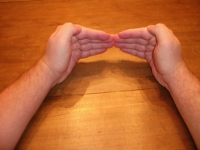
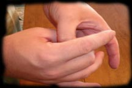
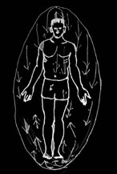
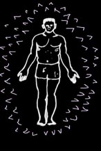

Экранирование (построение энергетического щита)
Вы неизбежно столкнетесь с другими энергетическими вампирами или людьми, которые могут попытаться вытянуть из Вас энергию. Противостоять им можно при помощи Экранирования или создания психического барьера, не позволяющего никому красть у Вас энергию или вредить еще каким-нибудь образом - на астральном, эфирном и других энергетических уровнях.
Сначала Вам необходимо освоить эффективные техники Экранирования. Одно из распространенных явлений среди энергетических вампиров - хотя и возмутительное, но нередкое - испытание других псай-вампиров на прочность... и подпитка от них.
Я хотел бы начать со способа построения щита, который несет тот же символизм, что и метод осознанного питания по принципу "голова-сердце-ладони". Это действительно элементарный щит для начинающих, но, тем не менее, действенный. Я попрошу Вас сперва использовать свои ладони, чтобы создать тот же магический эффект, который применяет маг, работая с конкретными ароматами, маслами или благовониями (тот же базовый принцип). Этот тип экрана подойдет даже тем, у кого нет опыта управления энергией (т.е. Новичкам).
Базовый щит
Держите ладони в позиции, показанной на рис.1. В процессе визуализируйте твердую непроницаемую стену белого света, которая формируется вокруг Вас подобно яйцу или кокону. Мысленно представьте себе, как астральный щит уплотняется и становится неподвижным.

Поверьте, это работает. Вера может казаться несущественной на материальном уровне бытия, но на духовных планах вера - это все. (Также прочтите определение "Магическая формула" в Словаре).

Другой способ построения щита - это техника замыкания пальцев в замок. В целом, все то же самое, но теперь Вы используете большие и средние пальцы рук и соединяете их в "замок" (рис. 2). Когда Вы овладеете этим методом - попробуйте осуществлять его, не используя руки.
Построение основных щитов: продвинутый уровень
Как только Вы овладеете базовыми техниками экранирования, переходите к этому типу щитов. Теперь я хочу, чтобы вместо яйца Вы сформировали сферу. Яйцевидный экран более уязвим, а в сферу сложнее проникнуть быстро. Хотя минус такого щита в том, что на его поддержание постоянно требуется немного энергии.
Подвижные щиты
Есть несколько типов экранирования, которые можно опробовать после того, как Вы освоили первый тип щитов. Эти щиты основаны на движении, поскольку неподвижные могут быть пробиты энергетическими "щупальцами" и повторными психическими атаками. Подвижные экраны отличаются по энергетическим модуляциям, типам движения и затратам энергии на их поддержание. Также важно не вкладывать слишком много "дурной силы" в создание "активных" щитов, поскольку такой выброс энергии на построение экрана вызовет множество удивленных взглядов и любопытство других энергетических вампиров... которые, возможно, попытаются пробить Ваш щит просто забавы ради или чтобы испытать его на прочность. Гораздо лучше иметь "реактивный" щит, хотя и защитный, но реактивный.

Экранирование рекой/водопадом
Я нахожу этот вид экранов очень эффективным, поскольку в них трудно проникнуть дважды в одном и том же месте - ведь щит находится в постоянном движении. Принцип его создания в том, чтобы заставить существующий твердый щит циркулировать, двигаться вокруг Вас как "водопад" - чтобы разные его области перемещались с разной скоростью, сменяя друг друга... как только Вы овладеете этим методом, увидите, что поддержание такого щита не требует много энергии.
Хаотическое экранирование
Хаотический щит подвижен все время и беспорядочно меняет частоту перемещений, тип движения и внешний вид. Этот тип экранирования трудно сокрушить, потому что единичная атака или даже несколько попыток пробить его в одном и том же месте, как правило, безрезультатны.
Огненный щит
Огненный щит охватывает своего владельца, превращая его в "человека-факел". Он сжигает все атаки, поскольку это один из стихийных щитов. Хорошим внешним источником энергии для его формирования и подпитки будет, конечно, солнце или ядро Земли.
Колючий щит

В соответствии со своим названием, это может быть твердый экран - панцирь или подвижный щит из шипов.
Эти славные, крутые на вид щиты, выглядят впечатляюще, но, в зависимости от размера, они привлекают слишком много любопытного внимания (я их называю грозные мышиные щиты). Поскольку это - активные экраны, они потребляют много энергии на поддержание и нуждаются во внимательном отношении. Я очень часто встречаю недавно пробужденных вампиров, которые используют колючие щиты, чтобы казаться крутыми плохими парнями... но большинство энергетических вампиров такое не впечатляет :)
Щит активного реагирования
Это тип экрана, способ защиты которого основан на нападении. Когда кто-то проникает в Ваш щит щупальцем - Вы проникаете щупальцем в его щит - поэтому потери энергии не происходит.
Зеркальный щит
Зеркальный щит обычно используется в языческих сообществах, он отражает атаки и возвращает их нападающему, либо отсылает назад негативную энергию... как зеркало.
Эмпатическое экранирование
Как правило, этот экран нужен, если прямой атаки на Вас нет (хотя может и быть), а утечка энергии вызвана травмирующими событиями или людьми, которые выплескивают на Вас слишком много эмоций. Чтобы Ваша энергия не тратилась на чужие эмоции, необходимо защитить себя и в этом направлении... Тогда Вы сможете отличать собственные эмоции от тех, которые Вам навязывают окружающие.
Плащ - технику плаща не так просто объяснить... Это процесс маскировки собственной энергетической сущности.
В заключение...
Это только начало, со временем Вы поймете, что типы экранов ограничиваются только Вашим воображением и энергетическим запасом... Если Вы хорошо это усвоите, то даже обнаружите, что в состоянии управлять своим щитом при помощи внешнего воздействия.

Источник: psychicvampire.org

Перевод: Nagini.
Редактирование: KyleRozenrot.
(собственность vampirecommunity.ru)
[Наверх]